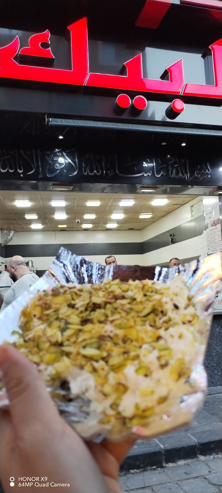
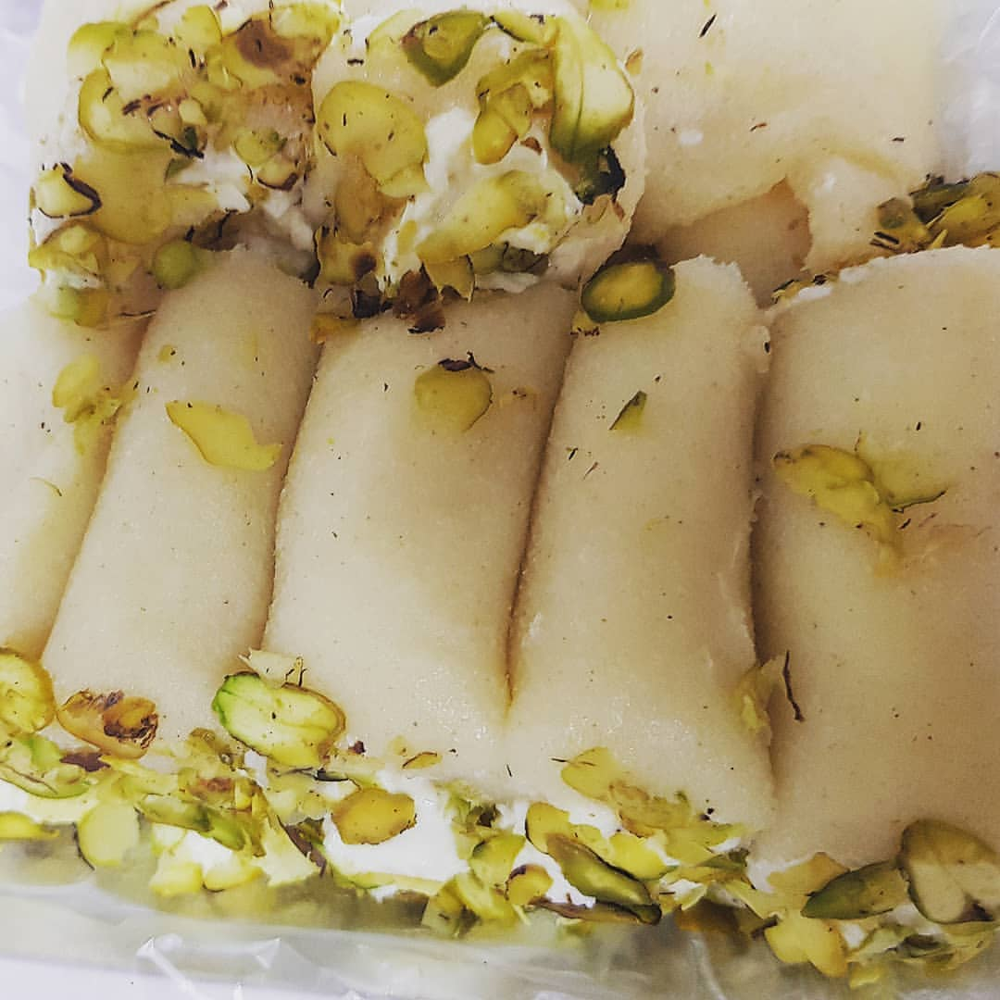

دكانة الكنافة التي يقف الناس على بابها في السوق القديم — جبنةٌ تمطّ على الصاج، قطرٌ يلمع، وزحمةٌ لها سببها.The knafeh shop people queue for in the old souq — cheese stretching on the griddle, syrup shining, and a crowd with a very good reason.
في عمق السوق القديم، تحت اللافتة الحمراء، يشتغل صاج البيك من السابعة صباحاً حتى منتصف الليل. أحد زوّارنا كتبها بلا تردد: «أفضل كنافة في العالم» — ونحن لا نجادل، فقط نقطّع له قطعةً زيادة.Deep inside the old souq, under the red sign, Al-Beik's griddle runs from seven in the morning until midnight. One reviewer wrote it without hesitation: "the best knefeh in the world" — we don't argue, we just cut an extra piece.
وقبل الكنافة وبعدها، هناك الابتسامة: الزوّار يذكرون بلال وأهل المحل بالاسم في تقييماتهم. الخبز طازجٌ دائماً، والكرم هنا جزءٌ من الوصفة — تعال ضيفاً، واخرج صاحباً.And before the knafeh, and after it, comes the smile: reviewers mention Bilal and the shop's crew by name. The bread is always fresh, and generosity is part of the recipe — arrive a guest, leave a friend.


عجينة الجبن تُرَقّ حتى الشفافية، تُحشى قشطةً وتُرَشّ فستقاً حلبياً — لفائف تُباع بالصينية وتخلص قبل أن تبرد.Cheese dough rolled until translucent, filled with fresh cream and showered in Aleppo pistachio — trays of rolls that sell out before they cool.
ساخنة من الصاج، وجهها محمّر وقلبها جبنة تمطّ — القطعة التي كتب عنها الزوّار أنها الأفضل في العالم.Hot off the griddle, browned on top, stretching cheese inside — the piece a reviewer called the best in the world.
لفائف بيضاء ناعمة بالقشطة والفستق — تؤكل بالمحل أو تُوَضّب بالصينية للبيت.Soft white rolls with cream and pistachio — eaten in the shop or boxed by the tray for home.
«الخبز دائماً طازج» — من كلام زوّارنا لا من كلامنا، ويخرج دافئاً على مدار اليوم."The bread is always fresh" — our guests' words, not ours, and it comes out warm all day long.
"Generous and full of flavor — the bread is always fresh. It's the best knefeh in the world. And I won't forget the welcoming smile from Bilal and every single one at the shop."
"Such a delicious traditional dessert — the knafeh is so recommended and worth a try."
"Best place for Syrian desserts in town."
★ 4.7 / 5 — 145 تقييم على غوغلGoogle reviews
| يومياًDaily | 7:00 — 24:00 |
من قبل فتحة السوق حتى بعد سكرته — الصاج شغّال طول النهار.From before the souq opens until after it sleeps — the griddle runs all day.
داخل السوق القديم — دمشق
اسألوا عن اللافتة الحمراء، أو اتصلوا: +963 11 222 1360Ask for the red sign, or call: +963 11 222 1360
✆ اتصلوا بناCall us افتحوا الخريطةOpen in Maps فيسبوكFacebook